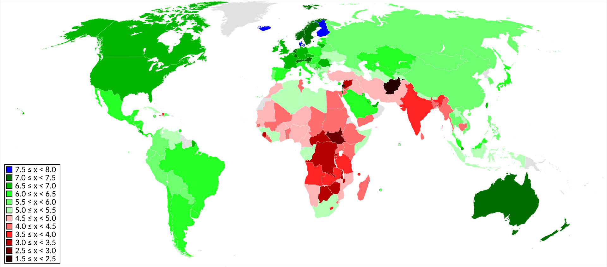
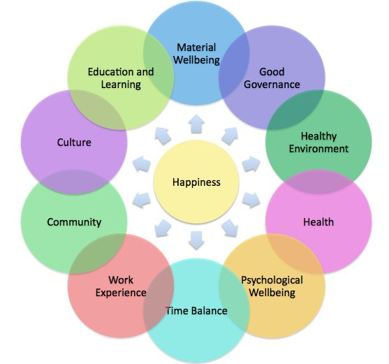

L'Indice de Bonheur (ou Indice de Bonheur National Brut, parfois appelé IBH ou HPI pour "Happiness Index") est une mesure utilisée pour évaluer le bien-être global et la satisfaction des individus ou des populations. Contrairement aux indicateurs économiques traditionnels comme le PIB, cet indice prend en compte des aspects qualitatifs de la vie pour mesurer le bonheur et la qualité de vie.
Here is a map of the Wolrd Happinness Index:

These are the different themes used tu calculate this index:
